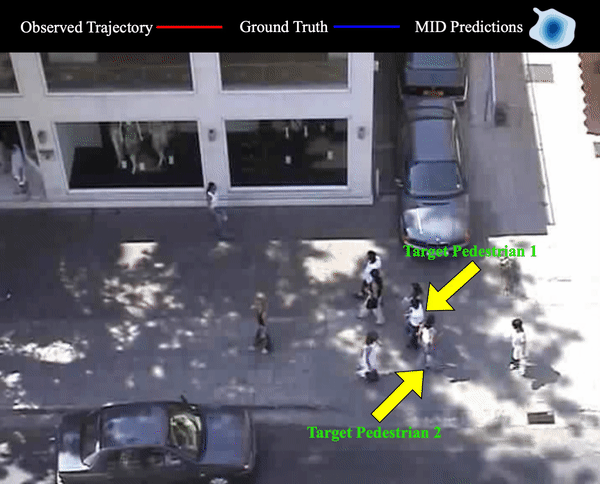

01Research
I work on video generation and real-time interactive systems. My current research focuses on making video generation models more intelligent and running in real-time, helping the models to understand the world and interact with human. Previously, I built data pipelines and trained foundation models at ByteDance and AI startups.


